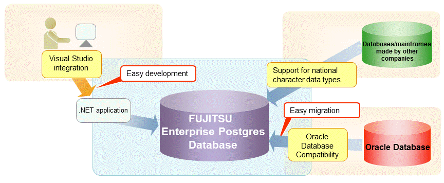

The interface for application development provided by FUJITSU Enterprise Postgres is perfectly compatible with PostgreSQL.
Along with the PostgreSQL interface, FUJITSU Enterprise Postgres also provides the following extended interfaces:
Support for National Characters
In order to secure portability from mainframes and databases of other companies, FUJITSU Enterprise Postgres provides data types that support national characters. The national characters are usable from the client application languages.
Refer to "1.1 Support for National Characters" for details.
Integration with Visual Studio
By integrating with Visual Studio, applications can be created using a standard framework for the building of a database server.
Refer to "1.2 Integration with Visual Studio" for details.
Compatibility with Oracle Databases
Compatibility with Oracle databases is offered. Use of the compatible features means that the revisions to existing applications can be isolated, and migration to open interfaces is made simpler.
Refer to "1.3 Compatibility with Oracle Database" for details.

Application connection switch feature
The application connection switch feature is provided to enable automatic connection to the target server when there are multiple servers with redundant configurations.
Refer to "1.4 Application Connection Switch Feature" for details.
Performance tuning
The following features are provided to control SQL statement query plans:
Optimizer hints
Locked statistics
Refer to "11.1 Enhanced Query Plan Stability" for details.
Scanning using a Vertical Clustered Index (VCI)
Scans becomes faster during aggregation of many rows by providing the features below:
Vertical clustered index (VCI)
In-memory data
This feature can only be used in Advanced Edition.
Refer to "Chapter 12 Scan Using a Vertical Clustered Index (VCI)" for details.